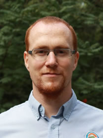
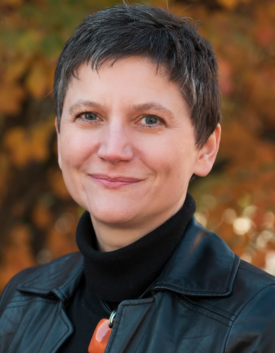

Keynote Speakers
Keynote 1 - Theory and Practice in HPC: Modeling, Programming, and Networking
|  |
Torsten Hoefler
Time: 09:10-10:00, September 13, 2016
Room: Grand Hall, 5F, Palais de Chine Hotel
Abstract
We advocate the usage of mathematical models and abstractions in practical high-performance computing. For this, we show a series of examples and use-cases where the abstractions introduced by performance models can lead to clearer pictures of the core problems and often provide non-obvious insights. We start with models of parallel algorithms leading to close-to-optimal practical implementations. We continue our tour with distributed-memory programming models that provide various abstractions to application developers. A short digression on how to measure parallel systems shows common pitfalls of practical performance modeling. Application performance models based on such accurate measurements support insight into the resource consumption and scalability of parallel programs on particular architectures. We close with a demonstration of how mathematical models can be used to derive practical network topologies and routing algorithms. In each of these areas, we demonstrate newest developments but also point to open problems. All these examples testify to the value of modeling in practical high-performance computing. We assume that a broader use of these techniques and the development of a solid theory for parallel performance will lead to deep insights at many fronts.
Biography
Torsten Hoeffler (ETH Zürich University)
Torsten Hoeffler is an Assistant Professor of Computer Science at ETH Zürich, Switzerland. Before joining ETH, he led the performance modeling and simulation efforts of parallel petascale applications for the NSF-funded Blue Waters project at NCSA/UIUC. He is also a key member of the Message Passing Interface (MPI) Forum where he chairs the "Collective Operations and Topologies" working group. Torsten won best paper awards at the ACM/IEEE Supercomputing Conference SC10, SC13, SC14, EuroMPI'13, HPDC'15, HPDC'16, IPDPS'15, and other conferences. He published numerous peer-reviewed scientific conference and journal articles and authored chapters of the MPI-2.2 and MPI-3.0 standards. He received the Latsis prize of ETH Zurich as well as an ERC starting grant in 2015. His research interests revolve around the central topic of "Performance-centric System Design" and include scalable networks, parallel programming techniques, and performance modeling. Additional information about Torsten can be found on his homepage at http://htor.inf.ethz.ch.
Keynote 2 - Caches All the Way Down: Infrastructure for Data Science
 |
David Abramson
Time: 09:10-10:10, September 14, 2016
Room: Grand Hall, 5F, Palais de Chine Hotel
Abstract
The rise of big data science has created new demands for modern computer systems. While floating point performance has driven computer architecture and system design for the past few decades, there is renewed interest in the speed at which data can be ingested and processed. Early exemplars such as Gordon, the NSF funded system at the San Diego Supercomputing Centre, shifted the focus from pure floating point performance to memory and IO rates. At the University of Queensland we have continued this trend with the design of FlashLite, a parallel cluster equiped with large amounts of main memory, Flash disk, and a distributed shared memory system (ScaleMP’s vSMP). This allows applications to place data “close” to the processor, enhancing processing speeds. Further, we have built a geographically distributed multi-tier hierarchical data fabric called MeDiCI, which provides an abstraction of very large data stores across the metropolitan area. MeDiCI leverages industry solutions such as IBM’s Spectrum Scale and SGI’s DMF platforms.
Caching underpins both FlashLite and MeDiCI. In this talk I will describe the design decisions and illustrate some early application studies that benefit from the approach.
Biography
David Abramson (University of Queensland)
Director, Research Computing Centre David has been involved in computer architecture and high performance computing research since 1979. He has held appointments at Griffith University, CSIRO, RMIT and Monash University. Prior to joining UQ, he was the Director of the Monash e-Education Centre, Science Director of the Monash e-Research Centre, and a Professor of Computer Science in the Faculty of Information Technology at Monash. From 2007 to 2011 he was an Australian Research Council Professorial Fellow. David has expertise in High Performance Computing, distributed and parallel computing, computer architecture and software engineering. He has produced in excess of 200 research publications, and some of his work has also been integrated in commercial products. One of these, Nimrod, has been used widely in research and academia globally, and is also available as a commercial product, called EnFuzion, from Axceleon. His world-leading work in parallel debugging is sold and marketed by Cray Inc, one of the world's leading supercomputing vendors, as a product called ccdb. David is a Fellow of the Association for Computing Machinery (ACM), the Institute of Electrical and Electronic Engineers (IEEE), the Australian Academy of Technology and Engineering (ATSE), and the Australian Computer Society (ACS). He is currently a visiting Professor in the Oxford e-Research Centre at the University of Oxford.
Keynote 3 - Who is afraid of I/O? Exploring I/O Challenges and Opportunities at the Exascale
|  |
Michela Taufer
Time: 09:10-10:10, September 15, 2016
Room: Grand Hall, 5F, Palais de Chine Hotel
Abstract
Clear trends in the past and current petascale systems (i.e., Jaguar and Titan) and the new generation of systems that will transition us toward exascale (i.e., Aurora and Summit) outline how concurrency and peak performance are growing dramatically, however, I/O bandwidth remains stagnant. Next-generation systems are expected to deliver 7 to 10 times higher peak floating-point performance with only 1 to 2 times higher PFS bandwidth compared to the current generation.
Data intensive applications, especially those exhibiting bursty I/O, must take this aspect into consideration and be more selective about what data is written to disk and how the data is written. In addressing the needs of these applications, can we take advantage of a rapidly changing technology landscape, including containerized environments, burst buffers, and in-situ/in-transit analytics? Are these technologies ready to transition these applications to exascale? In general, existing software components managing these technologies are I/O-ignorant, resulting in systems running the data intensive applications that exhibit contentions, hot spots, and poor performance.
In this talk, we explore challenges when dealing with I/O-ignorant high performance computing systems and opportunities for integrating I/O awareness in these systems. Specifically, we present solutions that use I/O awareness to reduce contentions in scheduling policies managing under provisioned systems with burst buffers, and to mitigate data movements in data-intensive simulations. Our proposed solutions go beyond high performance computing and develop opportunities for interdisciplinary collaborations.
Biography
Michela Taufer (University of Delaware)
Michela Taufer is an associate professor in the Computer and Information Sciences Department at the University of Delaware. She earned her master’s degrees in Computer Engineering from the University of Padova (Italy) and her doctoral degree in Computer Science from the Swiss Federal Institute of Technology (Switzerland). From 2003 to 2004 she was a La Jolla Interfaces in Science Training Program (LJIS) Postdoctoral Fellow at the University of California San Diego (UCSD) and The Scripps Research Institute (TSRI), where she worked on interdisciplinary projects in computer systems and computational chemistry. From 2005 to 2007, she was an Assistant Professor at the Computer Science Department of the University of Texas at El Paso (UTEP). She joined the University of Delaware in 2007 as an Assistant Professor and was promoted to Associate Professor with tenure in 2012. Taufer's research interests include scientific applications and their advanced programmability in heterogeneous computing (i.e., multi-core and many-core platforms, GPUs); performance analysis, modeling, and optimization of multi-scale applications on heterogeneous computing, cloud computing, and volunteer computing; numerical reproducibility and stability of large-scale simulations on multi-core platforms; big data analytics and MapReduce.